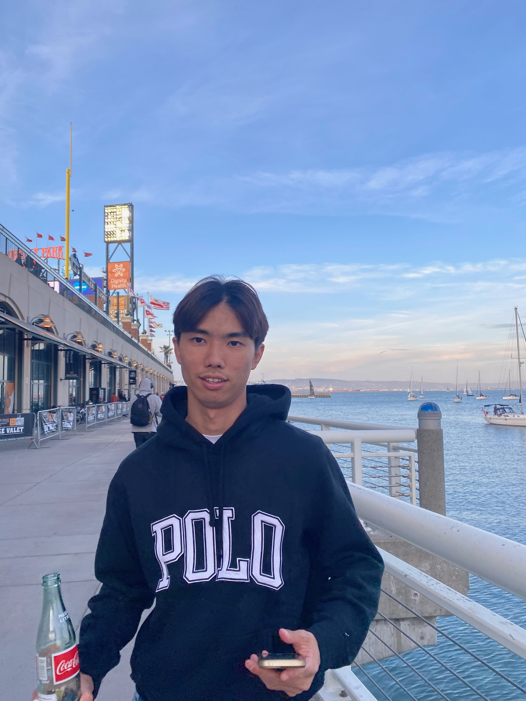

Ayumu Ueda
Data Science Major, Junior
Hi! My name is Ayumu, and my hobby is exploring outside Berkeley with friends.
My favorite spot around here is San Francisco because
when I go there, I feel like I've come back to my hometown, Tokyo.
- Ippudo
- Oori
- Super Duper Burgers

Internet Archive - Way Back Machine
- I learned that when people design something, they do not only consider the
apperance but also how customer feels and use it. It is important for us to
think daily about it to improve our design skills.
- My favorite part was the part author mentioned that seeing London excited her on the Search Bar.
The reason is that I thought they put London as example to make it easier for user to use Search Bar, but
it actually added excitement for the planned trip.
- "By routinely analyzing other apps, you'll
develop your product thinking and get better at
designing apps yourself."
- On a scale of 1 to 10, I would rate it an 8, I enjoyed it a lot!